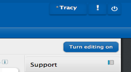
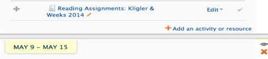
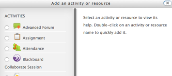
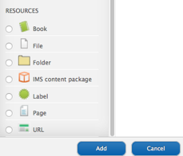
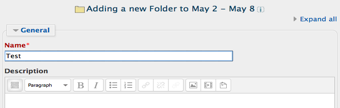
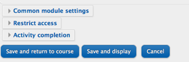

1. Turn on Editing on the upper right hand side of the course home page

2. Click the +add an activity or resource link, and a popup window will open

3. Scroll down to the you find Resources list

4. Check the Folder button

5. Click the Add button
6. Name the folder Shared Files or anything else you want.

7. Click the Save and display button

8. Proceed
to add your files by either dragging and dropping or browsing for them.